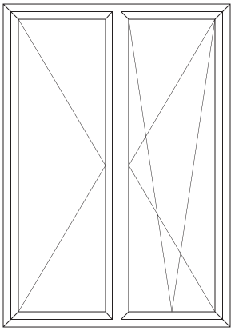
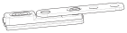
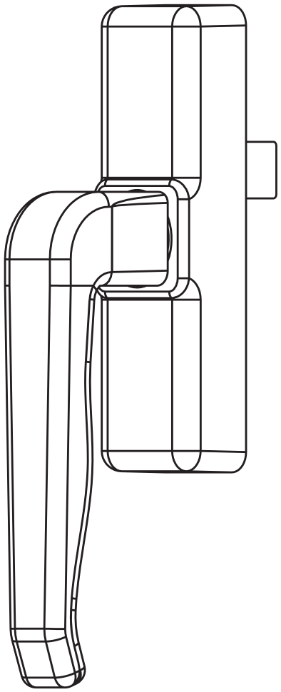
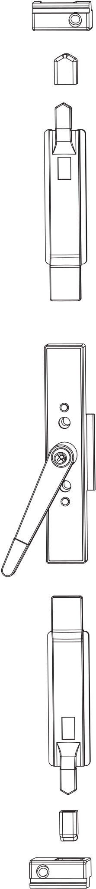
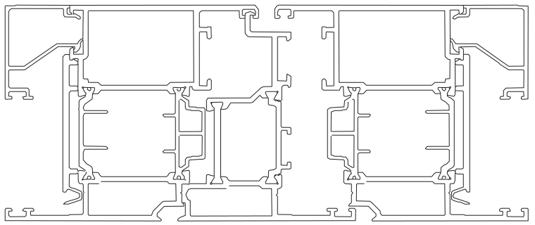

01AÇILIM SİSTEMLERİ

ÇİFT KANAT ÇİFT AÇILIM SETİ · MONTAJ ŞEMASI
80–170 kg
PASİF KANAT AÇILIM
MONTAJ ŞEMASIİçeriden görünüş · pasif kanat




PROFİL KESİTİaktif ve pasif kanat birleşimi

01
BOSSYTeknik değişiklik hakkı saklıdır · bossy.com.tr
20